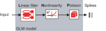
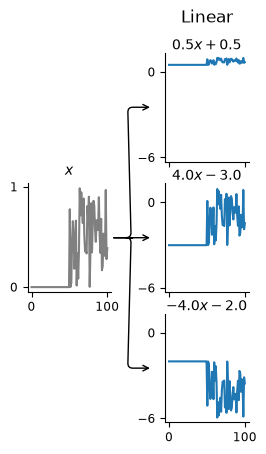
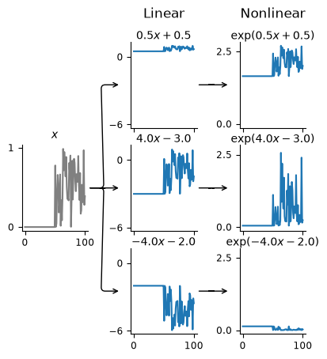
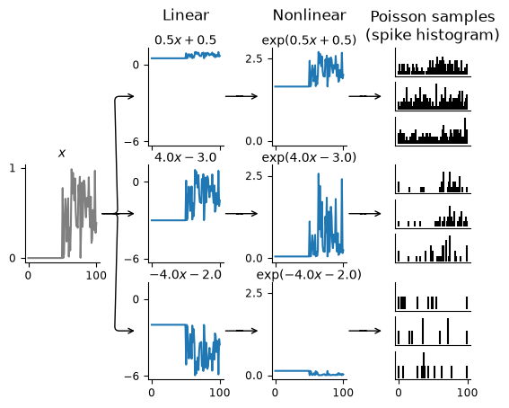

Download
Download this notebook: intro.ipynb!
Generalized Linear Models#
This page explains the simplest GLM in neuroscience: the linear-nonlinear-Poisson (LNP) model. In this model, the firing rate of a neuron at time \(t\) depends only on the input at time \(t\). The last section lists extensions of this model.
GLM components#
The LNP model has three steps.

A linear transformation of the input.
A nonlinearity that gives the firing rate.
A Poisson process with the firing rate as its mean, which generates spikes.
Linear step#
The linear transformation scales and shifts the input feature(s): \( \boldsymbol{W X} + \boldsymbol{c} \). In the one-dimensional case, this is a multiplication by a constant plus an intercept.
In the 1-d case, the model has two parameters. The weight \(w\) scales the input. The intercept \(c\) shifts the input. The linear step computes:
The next plots show the three steps for three example neurons. Each neuron has a different value of \(w\) and \(c\).
import matplotlib.pyplot as plt
# first import things
import numpy as np
import pynapple as nap
import nemos as nmo
# some helper plotting functions
from nemos import _documentation_utils as doc_plots
# configure plots some
plt.style.use(nmo.styles.plot_style)
The first plot shows the linear transformation of the input \(x\):
weights = np.asarray([.5, 4, -4])
intercepts = np.asarray([.5, -3, -2])
# make a step function with some noise riding on top
input_feature = np.zeros(100)
input_feature[50:] = 1
input_feature *= np.random.rand(100)
input_feature = nap.Tsd(np.linspace(0, 100, 100), input_feature)
fig = doc_plots.lnp_schematic(input_feature, weights, intercepts)

The weight stretches or shrinks the input. The intercept moves the baseline up or down. The model predicts the firing rate, so the intercept sets the baseline firing rate: the rate when the input is zero.
Nonlinear step#
The output of the linear step can be negative, but a firing rate cannot be negative. The nonlinearity makes the firing rate positive. To show this step, set plot_nonlinear=True in lnp_schematic():
fig = doc_plots.lnp_schematic(input_feature, weights, intercepts,
plot_nonlinear=True)

Note
NeMoS keeps the nonlinearity fixed. The default is the exponential. A small number of other choices, such as soft-plus, are also available. Each of these choices makes the firing rate non-negative and keeps the problem convex. A convex problem has a single optimal solution. A more complex nonlinearity is possible in principle, but convexity is not guaranteed in general.
With the exponential nonlinearity, the firing rate is:
The output of the nonlinearity is always positive. Note that the scale of the y-axis also changes.
Poisson step#
The last step generates spikes from the firing rate:
# mkdocs_gallery_thumbnail_number = 3
fig = doc_plots.lnp_schematic(input_feature, weights, intercepts,
plot_nonlinear=True, plot_spikes=True)

Spiking is a stochastic process. One firing rate can generate many different spike trains. The plot shows three spike trains for each neuron. Each spike train is a sample from a Poisson process. The mean of this process is the firing rate, that is, the output of the linear and nonlinear steps.
Log-likelihood#
The model can generate many spike trains, but the data contain one observed spike train. To compare the model with the data, use the log-likelihood. The log-likelihood measures how probable the observed spike train is for a given firing rate. If \(y(t)\) is the spike count and \(\lambda(t)\) is the firing rate, the log-likelihood is:
The \(\log(y(t)!)\) term does not depend on \(\lambda(t)\), so it does not change with the model. This term is usually dropped:
Equation (4) is the objective function of the GLM. The fit finds the firing rate that maximizes the likelihood of the observed spike train.
Note
In NeMoS, the score method computes the log-likelihood from the
predictors and the counts. The method first computes the rate
\(\lambda(t)\) with equation (2). Then it computes the likelihood with
equation (4). The optimization also uses this method.
More general GLMs#
The LNP model is a special case of a GLM. It has known limitations\(^{[1]}\). For example, the LNP model ignores the refractory period and other effects of spike history. Other pages show how to add spike history filters to a GLM to get more accurate results. For a population of neurons recorded at the same time, a GLM can also include coupling filters between neurons. Coupling filters can help show how much of the activity comes from the input \(X\), and how much comes from the other neurons in the population.